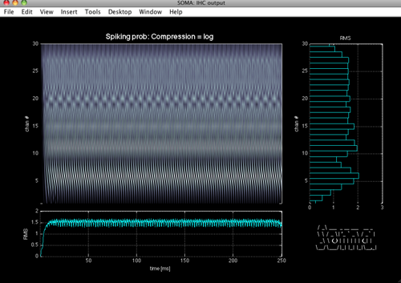
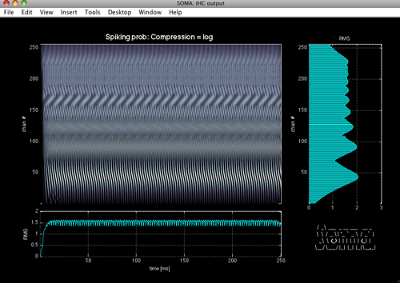
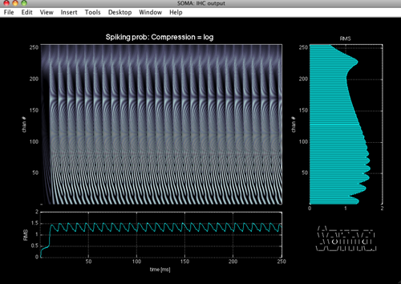
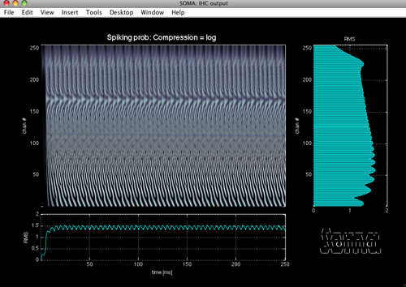

soma_demo.m
This is a simple demo script that highlights a few features of he soma model. Downloads and full documentation are available at https://github.com/audioplastic/soma I strongly suggest you look over the above link before running this demo.
Run this script one cell at at time (ctrl+return).
Contents
Excitation pattern demo
This first demo looks at the model response to harmonic complex tones. By adjusting the fundamental frequency, the the harmonic resolvability of individual partials can be seen to change in the excitation pattern shown by the nerveView window.
close all; clear all; clc; clear classes import soma.* x = ihcProc; %make an ihc process % Now fill the sig field with a sinusoid dt = 1/x.sr; timeVect = dt:dt:0.25; fZero = 440; harmonicN = 1:10; harmonicComplex = mean(sin(2*pi*fZero*timeVect'*harmonicN),2); %Add some envelope ramps rampDur = 10e-3; %10 ms envS = ceil( rampDur/dt ); env = [ cos(linspace(-pi/2,0,envS))';... ones(numel(harmonicComplex)-2*envS, 1);... cos(linspace(0,pi/2,envS))']; harmonicComplex = harmonicComplex.*env; %listen soundsc(harmonicComplex,x.sr); %push it into the soma object x.sig = harmonicComplex; %visualise y = nerveView(x);
Warning: Objects of 'onCleanup' class exist. Cannot clear this class or any of its super-classes.
Increase the channel density
%Ok, we can't see much spectral resolution in that plot because the channel %density is too low. Bump it up. x.bmm_nChans = 256; % Now many harmonic peaks are clearly distinguishable from their neighbors.
bmm_nChans change detected. Redrawing.
Lower F0
If the fundamental frequency is lowered, then the individual harmonics bunch closer together in frequency and stimulus becomes less resolved by a given filter.
fZero = 110; harmonicN = 1:40; harmonicComplex = mean(sin(2*pi*fZero*timeVect'*harmonicN),2); harmonicComplex = harmonicComplex.*env; x.sig = harmonicComplex;
sig change detected. Redrawing.
Alternating phase
The phase of the partials can be alternated to double the envelope rate. This does not influence the resolvability of individual harmonics, but it does change the excitation pattern due to phase interactions.
altPhi = repmat([0 pi/2], 1, numel(harmonicN)/2);
harmonicComplex = mean(sin(2*pi*fZero*timeVect'*harmonicN ...
+ repmat(altPhi,numel(timeVect),1)),2);
harmonicComplex = harmonicComplex.*env;
x.sig = harmonicComplex;
sig change detected. Redrawing.